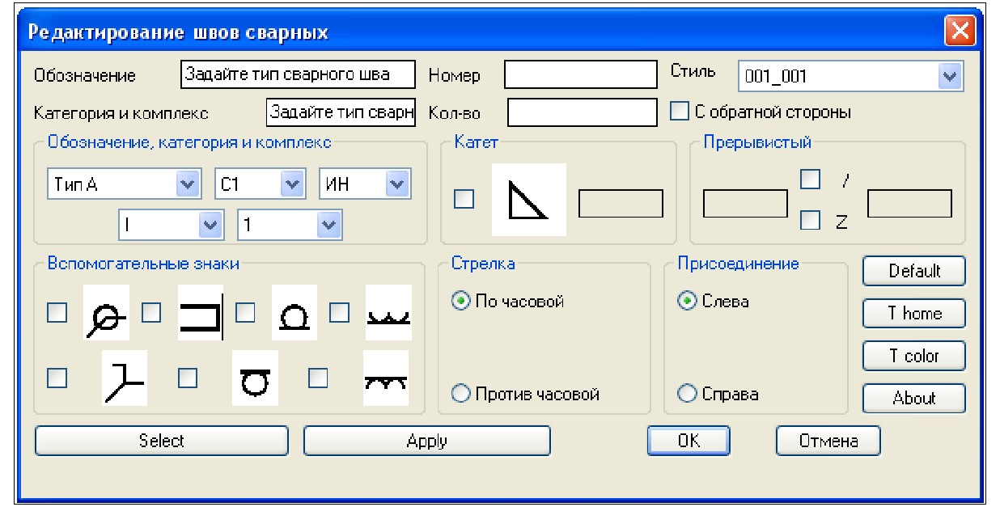
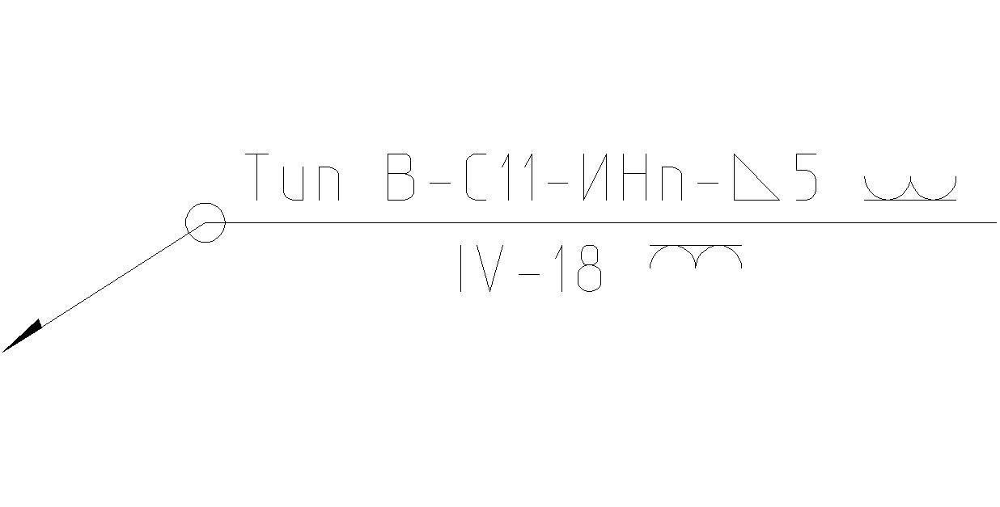
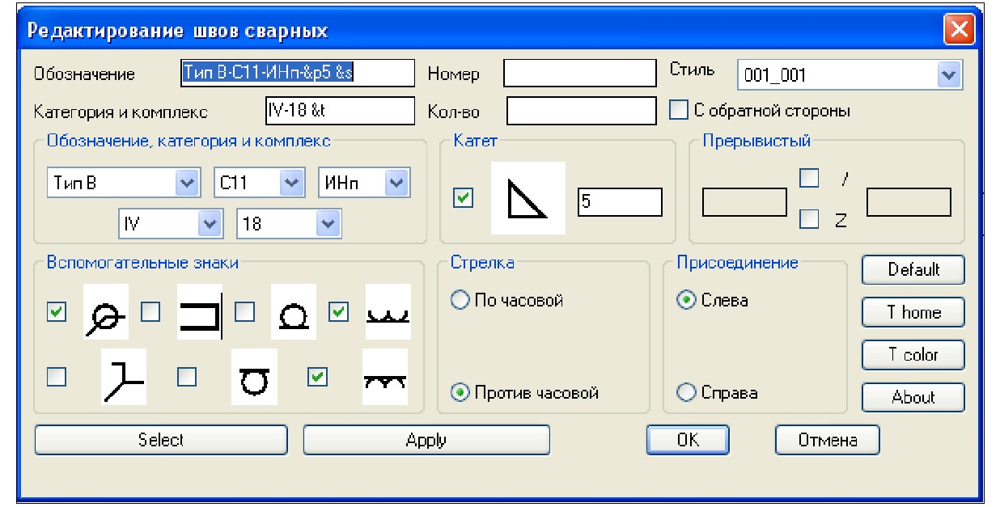
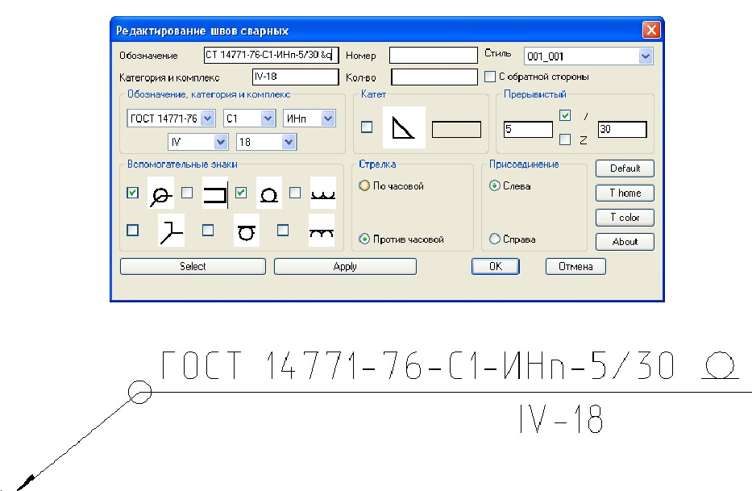
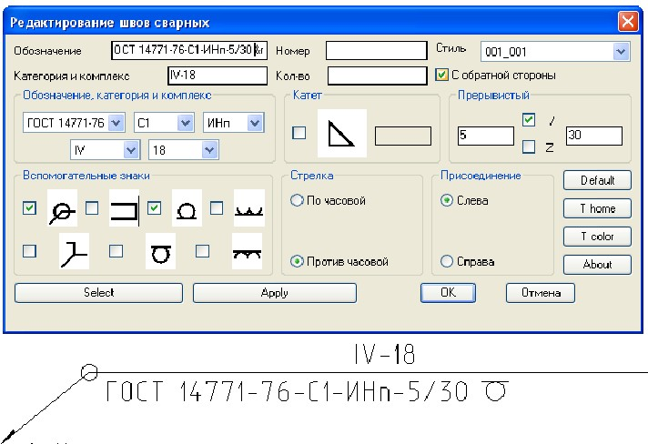
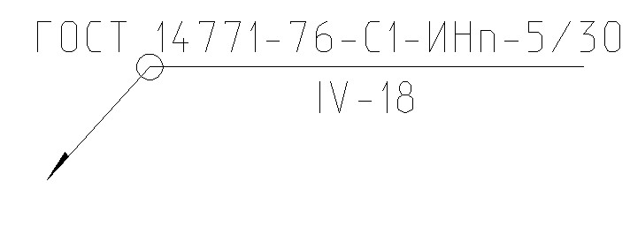

Сварные швы (SV)
В командной строке вводим текст «SV», далее «Ввод».
Команда: sv
Введите начальную точку: (указываем место где будет находится сварной шов )
Введите конечную точку: (указываем место где удобно разместить текст обозначения сварного шва)
Команда: es (команда вызова окна «редактирование швов сварных»)

Обозначение,
категория и комплекс — позволяет выбрать из
предложенных списков:
обозначение ТИПа сварного шва можно выбрать в соответствии с ГОСТ 2.312-72 и ЖАКИ;
условные обозначения соединений и способы сварки в соответствии с ГОСТ
категория и комплекс в соответствии с ЖАКИ

Вспомогательные
знаки — позволяет выбрать способ выполнения сварного шва и его
последующей обработки.

Катет — при выборе данной опции можно к тексту обозначения сварного шва добавить значек катета и вручную задать его высоту.
Прерывистый- при выборе данной опции можно проставить прерывистый шов или по незамкнутому контуру.

С оборотной стороны - при выборе данной опции можно проставить обозначение сварного шва с оборотной стороны.

После выбора всех параметров сварного шва нужно нажать клавишу «APPLY», далее «ОК».

(!) После нажатия клавиши «ОК», окно «редактирования швов сврных» закрывается. Что-бы выставить положение текста обозначения сварного шва правильно, необходимо выделить сварной шов (лкм) и за «точку растягивания» перетянуть всторону, затем тем-же методом перетянуть текст в нужное положение.
Редактирование сварного шва — при необходимости редактирования текста обозначения сварного шва, необходимо ввести в командной строке команду «ES».
Текст колличества сварных швов и номер сварного шва вносим обычным однострочным текстом.